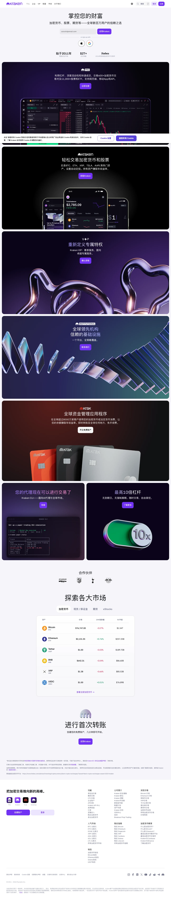

Kraken 的 Design.md 主题展示，围绕金融科技、媒体内容、暗色界面、Web3组织页面。
Crypto trading. Purple-accented dark UI, data-dense dashboards.

#7132f5: #7132f5#a0a0a0: #a0a0a0#000000: #000000#fbbf24: #fbbf24#8a8a8a: #8a8a8a#0a0a0a: #0a0a0a#e0e0e0: #e0e0e0#ffffff: #ffffffdisplay: Helvetica Neuebody: IBM Plex Sansmono: ui-monospacehints: Helvetica Neue,IBM Plex Sans,ui-monospacecontrol: 7pxcard: 7pxpreview: 7pxpill: 9999pxsource: design-mdxxs: 36pxxs: 0.5pxsm: 13pxmd: 16pxlg: 8pxxl: 1pxxxl: 2pxxxxl: 3pxsection: 4pxsection-lg: 5pxhero: 6pxband: 10pxspace-13: 12pxspace-14: 15pxspace-15: 20pxspace-16: 24pxsource: design-md